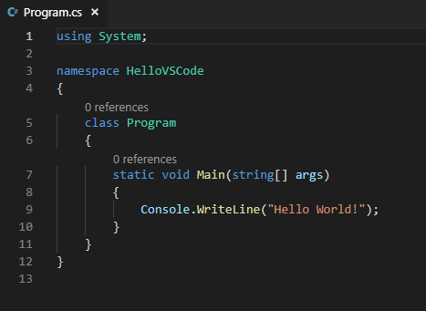

C#
C# — это язык программирования, основанный на синтаксисе языка Си (C).
Области, в которых используется язык программирования C:
Встроенные системы. На C программируют микроконтроллеры и микропроцессоры, которые используются в бытовой технике, медицинских устройствах и промышленных контроллерах.
Автомобильная электроника. В автомобильной промышленности C применяют для разработки программного обеспечения для различных электронных систем, таких как системы управления двигателем, системы безопасности и информационно-развлекательные системы.
Промышленная автоматизация. В этой сфере C используют для программирования контроллеров и других устройств, которые управляют производственными процессами.
Научные вычисления. В области научных вычислений C применяют для разработки программного обеспечения, которое требует высокой производительности и точности. Примеры включают симуляции физических процессов, численные методы и анализ данных.
Финансовые приложения. На C пишут системы управления рисками и алгоритмическую торговлю. Это позволяет обрабатывать большие объёмы данных и выполнять сложные вычисления в реальном времени.
Суперкомпьютеры. C используют для программирования суперкомпьютеров, которые выполняют сложные вычислительные задачи, такие как моделирование климата, биомедицинские исследования и анализ больших данных.
